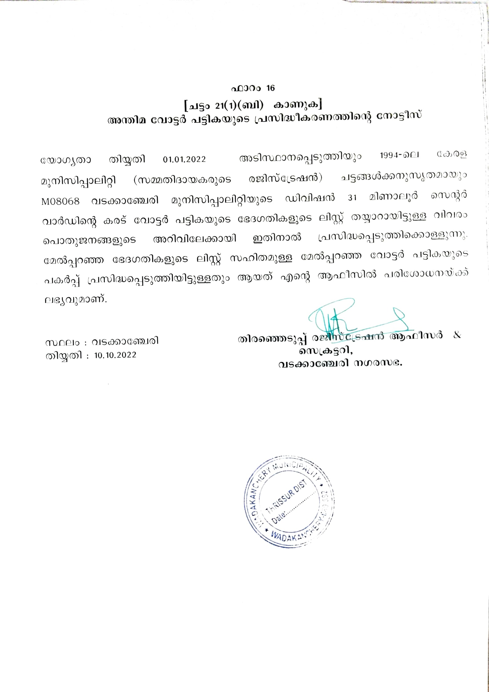

BYELECTION 2022 അന്തിമ വോട്ടര് ലിസ്റ്റ് പ്രസിദ്ധീകരിച്ചു.
ലഭ്യമാകുന്നതിന് ചുവടെ കാണുന്ന ലിങ്കില് ക്ലിക്ക് ചെയ്യുക
https://drive.google.com/file/d/1G012eX7R3nVVBho5ANoufpJqcITSDnp0/view?usp=sharing

- Read more about BYELECTION 2022 അന്തിമ വോട്ടര് ലിസ്റ്റ് പ്രസിദ്ധീകരിച്ചു.
- Log in to post comments
- 9 views


.GIF@itok=xwIMtKdD)